This project is based on the citizen science platform Planet Hunters TESS, which is part of NASA’s broader effort to involve the public in the search for exoplanets using data from the Transiting Exoplanet Survey Satellite (TESS). Planet Hunters TESS is designed around a simple but powerful idea: while automated pipelines are essential for processing the enormous volume of TESS light curve data, human participants can still play an important role by visually inspecting light curves and identifying patterns that may be difficult for algorithms to detect reliably.
I chose this project because it provides a clear example of how citizen science connects real scientific data analysis with human perception and decision-making. The scientific goal of Planet Hunters TESS is to detect exoplanet transits, which are small periodic dips in stellar brightness caused by planets passing in front of their host stars. These signals are often weak, noisy, or confused with stellar variability, making the problem challenging even for advanced automated methods. Understanding how humans and algorithms complement each other in this setting is therefore both scientifically and methodologically meaningful.
In this project, I built an interactive Python-based analysis tool that simulates and extends this human–machine collaboration workflow. The tool is designed to reflect the structure of real exoplanet search pipelines while keeping human inspection as an explicit part of the process. Users can explore raw TESS light curves from different sectors, select candidates for deeper analysis, and then apply a step-by-step computational pipeline consisting of sigma clipping, median-filter detrending, Box Least Squares (BLS) period search, phase folding, and transit visualization. Rather than treating automation as a black box, the workflow is designed to make each transformation of the data visible and interpretable.
The core idea of exoplanet transit detection is to identify periodic decreases in stellar brightness caused by a planet crossing the stellar disk. Automated methods such as Box Least Squares (BLS) are widely used because they efficiently search for box-shaped signals across large datasets. The raw observations consist of discrete flux measurements \(f(t_i)\) at times \(t_i\), but these measurements are affected by instrumental noise, stellar variability, and outliers. To address this, I first apply sigma clipping, which removes points satisfying \(|f(t_i)-\mu| > k\sigma\) with \(k=5\), reducing the influence of extreme deviations that are unlikely to be physically meaningful.
Next, I estimate a smooth low-frequency trend \(T(t)\) using a median filter and construct a normalized light curve \[ F(t) = \frac{f(t)}{T(t)}. \] This step isolates short-duration variations such as transits from long-term stellar variability. The BLS algorithm then searches for periodic box-like signals by testing a grid of trial periods \(P\) and transit durations \(\tau\). For each trial period, the light curve is folded into phase space using \[ \phi = \left(\frac{t - t_0}{P}\right) \bmod 1, \] and a box-shaped model \(M(\phi)\) is fitted: \[ M(\phi)=\begin{cases} 1-\delta, & \text{if } |\phi-\phi_0| < \dfrac{\tau}{2P},\\[6pt] 1, & \text{otherwise}. \end{cases} \] The detection statistic is based on how much the variance of the light curve is reduced when this model is applied, and the best candidate period is selected by maximizing this statistic.
Phase folding aligns repeated transit events so that signals become visually coherent if a true periodic pattern exists. This makes it possible to distinguish genuine planetary transits from random noise fluctuations. However, the method also has limitations: it assumes a single stable periodic signal and a box-like transit shape, which can lead to incorrect detections in the presence of multi-periodic variability or structured noise.
I implemented the full pipeline using TESS light curves retrieved from the MAST archive. The program automatically queries available time-series products for a given TIC, downloads selected files, and extracts flux measurements. Depending on availability, PDCSAP flux is preferred to reduce systematic effects. The data are cleaned by removing non-finite values and sorting by time. Sigma clipping is applied to remove outliers, and a median filter is used to estimate and remove long-term trends. The flattened light curve is then passed into the BLS search over a dense grid of periods and durations. The best-fit parameters, including period \(P\), transit midpoint \(t_0\), and duration, are recorded for analysis. Finally, phase-folded plots and transit overlays are generated for visual inspection and comparison with raw data.
Below I present the main categories of outcomes observed in this project, focusing on how human judgment and automated detection behave under different conditions.
In cases where both human inspection and the algorithm agree, the raw light curve shows a clear repeating dip that survives all preprocessing steps. The BLS periodogram exhibits a strong peak at a single period, and the phase-folded light curve shows a consistent transit shape with stable depth and duration across cycles. These cases represent ideal detection scenarios where the assumptions of the model are well satisfied.
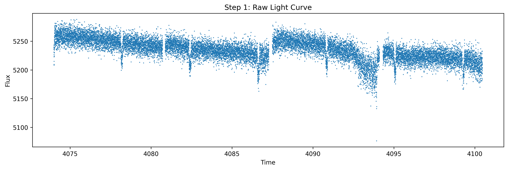
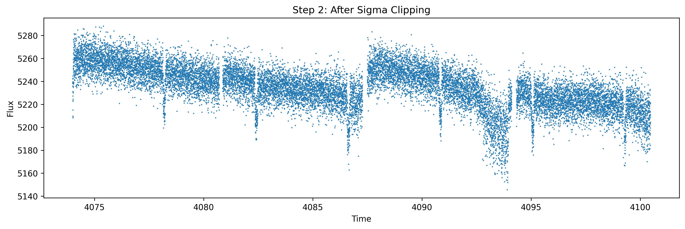
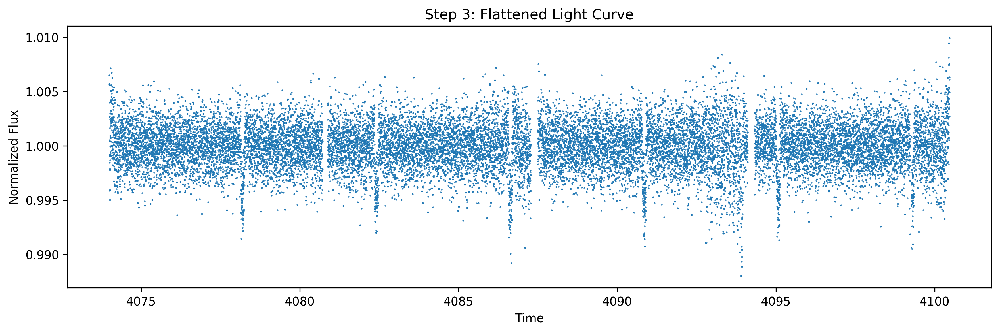
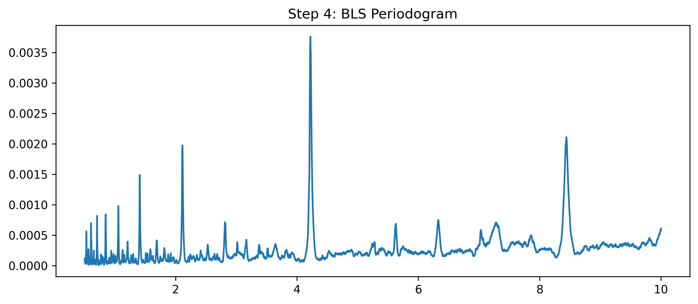
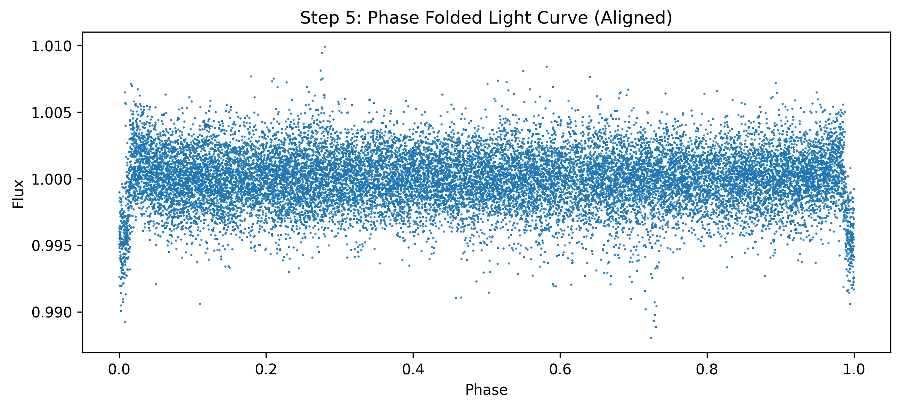
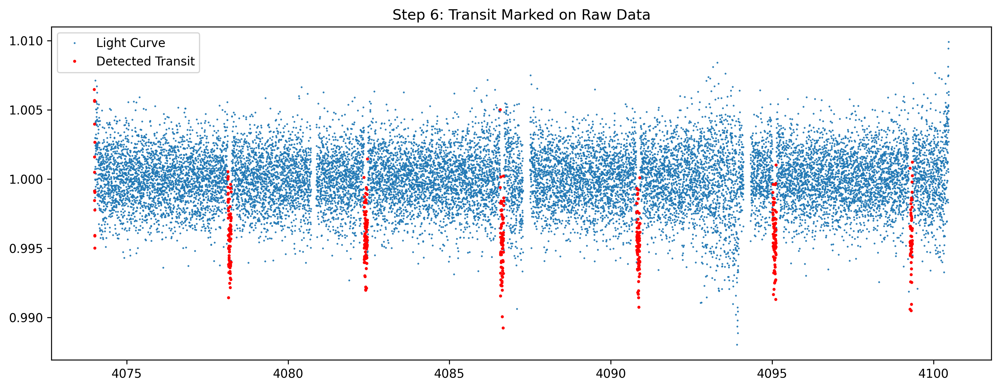
Figure 1. Processing stages for a candidate where both human inspection and BLS identify a consistent transit signal.
In cases where the algorithm detects a signal that is not immediately obvious to the human eye, the transit depth may be shallow or buried in noise. In these situations, BLS can still identify a statistically significant periodic pattern, and phase folding can reveal a weak but consistent signal that becomes more apparent after alignment. These cases highlight the strength of automated methods in detecting low signal-to-noise periodic structure.
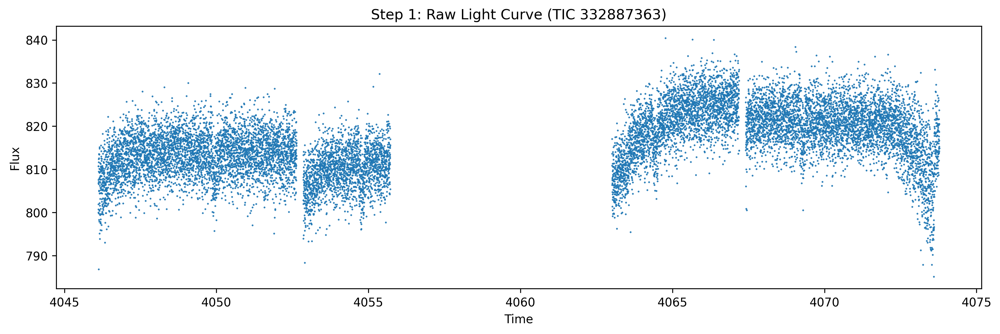
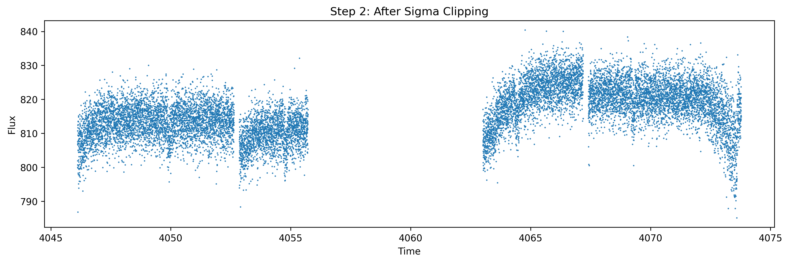
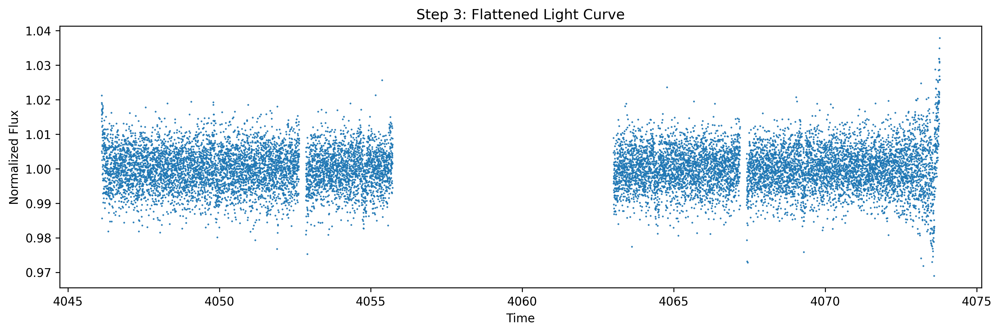
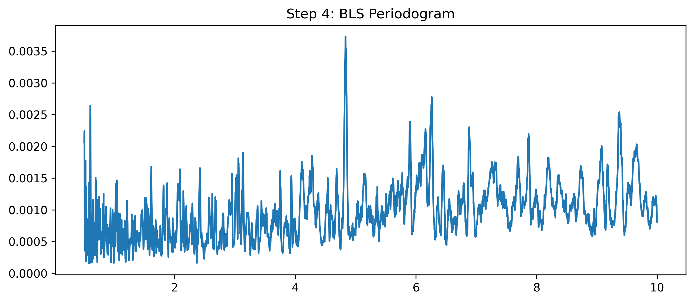
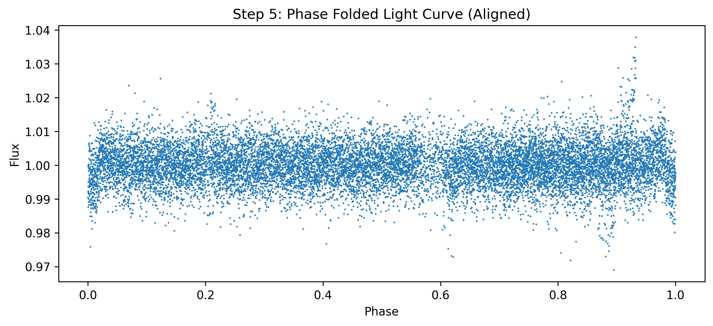
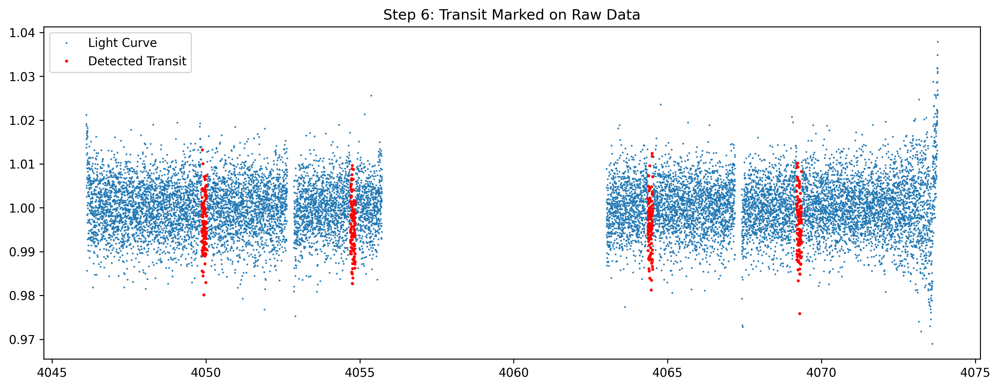
Figure 2. A weak transit candidate that is difficult to identify visually but is recovered by the BLS algorithm.
In cases where the algorithm fails but human inspection raises concerns, the data often contain either multi-periodic variability or noise-dominated structure. In such cases, BLS still returns a best-fit period because it optimizes variance reduction under a constrained model, but the resulting phase-folded diagram shows scattered or inconsistent structure rather than a coherent transit signal. Although a human observer may not be able to identify the true underlying signal, the absence of a stable transit shape and the inconsistency between cycles provide evidence that the algorithmic detection should not be trusted. These examples demonstrate the limitations of assuming a single periodic box-shaped model and highlight the importance of human validation.
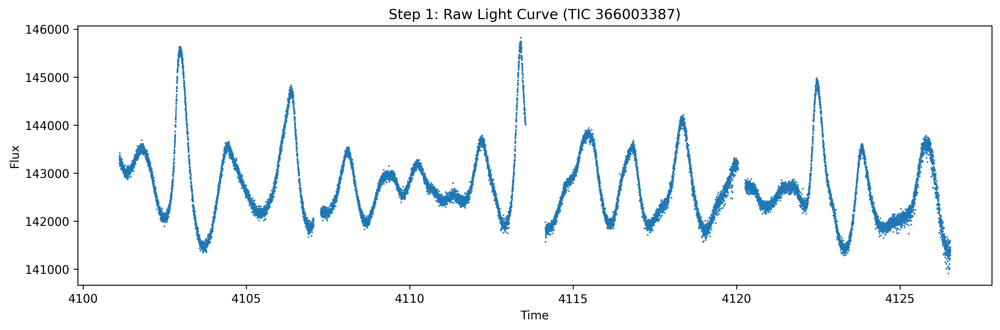
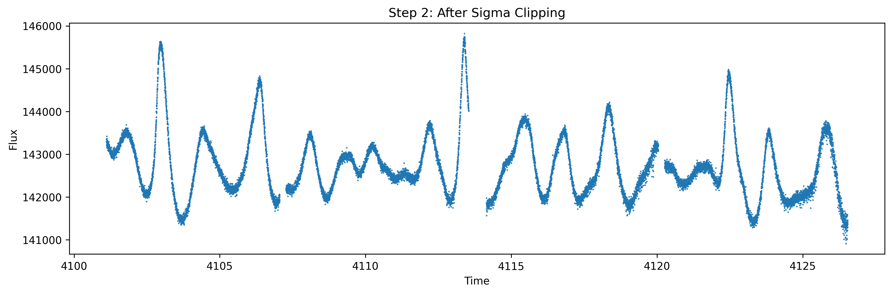
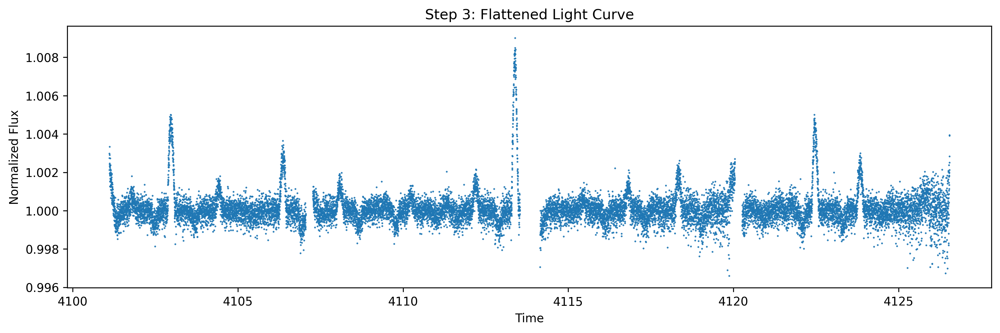
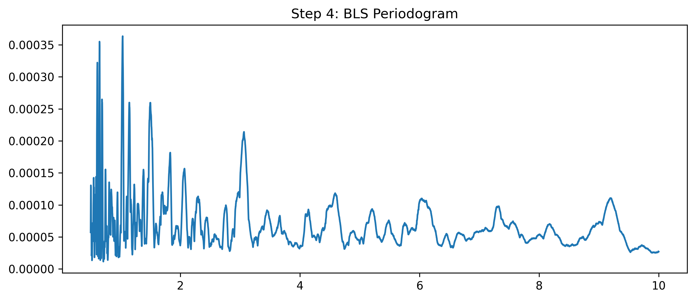
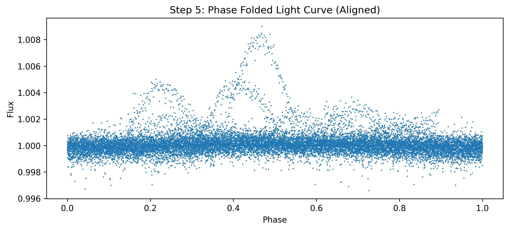
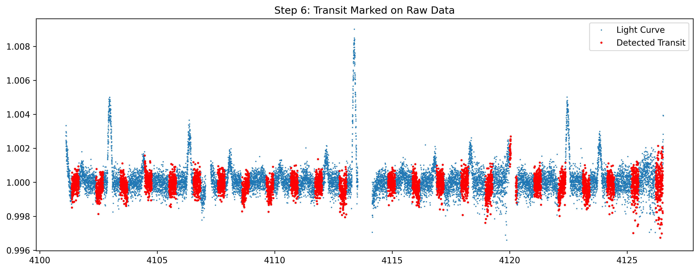
Figure 3. A case where the BLS algorithm returns a period but the phase-folded signal lacks a coherent transit structure.
The results obtained from this workflow reflect several challenges faced by the designers of Planet Hunters TESS. Citizen scientists are frequently asked to evaluate light curves that contain instrumental artifacts, stellar variability, and ambiguous signals. By displaying both the raw observations and the outputs of each processing stage, this workflow illustrates how human participants can contribute more effectively when they are given context rather than only a final algorithmic prediction. In this sense, the project serves not only as an exoplanet detection exercise but also as an exploration of how citizen science platforms can structure interactions between people and automated systems.
The mathematical structure of the pipeline helps explain these failure modes. Sigma clipping may remove real short-duration events if thresholds are too strict, while median filtering can distort transit shapes if the chosen kernel size overlaps with the signal scale. Similarly, BLS is optimal under assumptions of a single periodic, box-like signal in relatively uncorrelated noise, but real stellar light curves often violate these assumptions. As a result, the algorithm may produce high-confidence detections that are statistically consistent but physically incorrect.
One of the main contributions of this project is the design of an interactive workflow that integrates human inspection directly into the exoplanet detection process. Instead of treating the algorithm as the final decision-maker, the system presents raw data first and gradually introduces preprocessing and detection results. This structure encourages critical comparison between human perception and algorithmic output, reducing over-reliance on automated classification and making potential failure modes easier to identify.
From a broader perspective, this project demonstrates how citizen science systems such as Planet Hunters TESS benefit from structured human participation. While automated pipelines are necessary for handling large-scale astronomical datasets, they are still limited by modeling assumptions. Human participants contribute by recognizing inconsistencies, questioning ambiguous detections, and identifying cases where algorithmic confidence does not match visual evidence. In this sense, citizen science is not simply a supporting layer for automation, but an additional validation mechanism that improves the robustness of scientific inference.
Overall, this project highlights the complementary roles of human judgment and automated detection in modern astrophysical data analysis. Algorithms excel at systematically searching enormous datasets, while humans contribute intuition, skepticism, and contextual interpretation. The most important lesson from Planet Hunters TESS is that scientific discovery does not always come from choosing between people and machines. Instead, the strongest results emerge when computational tools and human participants work together, each compensating for the limitations of the other. Citizen science projects demonstrate that meaningful scientific contributions can come not only from professional researchers, but also from engaged members of the public working alongside automated systems. Through the development of this workflow, I gained a deeper understanding of both the technical challenges of exoplanet detection and the broader role that human participation continues to play in modern scientific research.